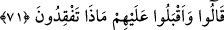

“Bana kim olduğunuzu haber vermeden size bir şey söylemem.” dedi.
Hz. Peygamber (a.s.):
“Sen bize haber verdiğin zaman biz de sana kim olduğumuzu söyleriz.” buyurdu.
Adam da onlar hakkında kendisine ulaştığı kadarıyla bildiklerini söyledi. Sözünü
tamamlayınca:
“Peki söyleyin bakalım sizler kimsiniz?’ diye sordu.
Hz. Peygamber (a.s.) da:
“Biz atılan sudanız.” diyerek Irak suyundan oldukları intibaı verdi.[73]
Burada tevriye vardır. Irak bölgesi çok sulak olduğu için su bu bölgeye nisbet
edilmiştir.
Yine rivâyet edildiğine göre Rasûlullah (s.a.) hicret sırasında mağaradan çıkıp
Medine’ye yöneldiğinde Ebû Bekir (r.a.) da onun terkisindeydi. İşte o zaman bir adam:
“Bu yanındaki kim?” diye sordu. Ebû Bekir (r.a.):
“Bu zat bana yol gösteriyor.” dedi.[74] O bu sözüyle hayır yolunu kastediyordu.
İnsânü’l-uyûn’da böyle geçmektedir.
Müftî Sa‘dî’nin Hâşiye’sinde der ki: “Bir maslahat içerdiği zaman yalana ruhsat
verilmiştir.”
Daha hayırlıdır, maslahata mebnî bir yalan
Milletin arasına fitne sokan bir doğrudan
Bazıları der ki: “Siz hırsızsınız” şeklindeki hitap, münâdînin kendi düşüncesine
binâen söylenmiştir. Çünkü Yûsuf (a.s.) su kabına kardeşinin yüküne herkesten gizli
olarak ya bizzat kendisi koymuş ya da en güvendiği birine koydurmuştu.
el-Kısas’ta der ki: Su kabını koydurduğu kişi kendi oğluydu. Bu durumu herkesten
gizli tutmasını sıkı sıkıya teNbihledi.
Yûsuf (a.s.)’ın adamları su kabını aradılar ve bulamadılar. Yûsuf’un kardeşlerinin
bulunduğu kervandan başka yeni yola çıkan kimse de yoktu. Onun için su tasını alanın
onlar olduğu zannı onlarda kuvvetlendi. Aralarından biri de kendi zannına göre: “Siz
hırsızsınız” diye bağırdı.
71. (Yûsuf’un kardeşleri) onlara dönerek: “Ne arıyorsunuz?” dediler.
Yûsuf’un kardeşleri “onlara dönerek:” yâni su tasını arayanlara yönelerek “Ne
arıyorsunuz?” dediler.” Bu ifade, onların böyle bir şeyden uzak oldukları için